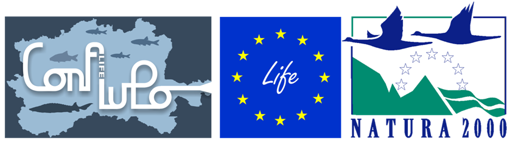
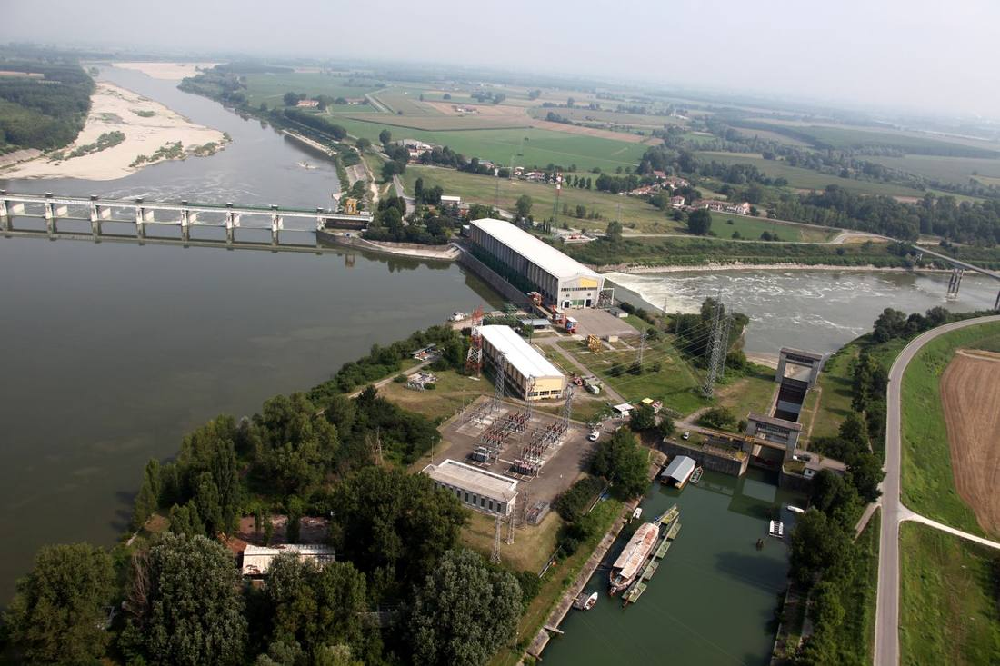
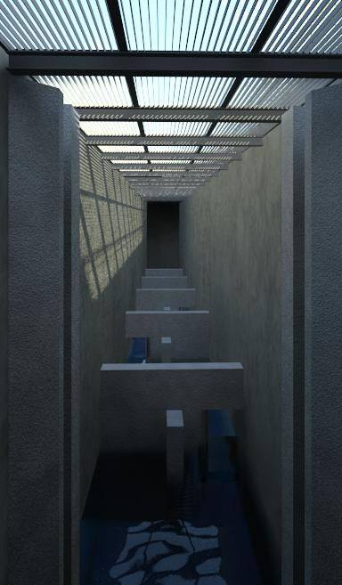
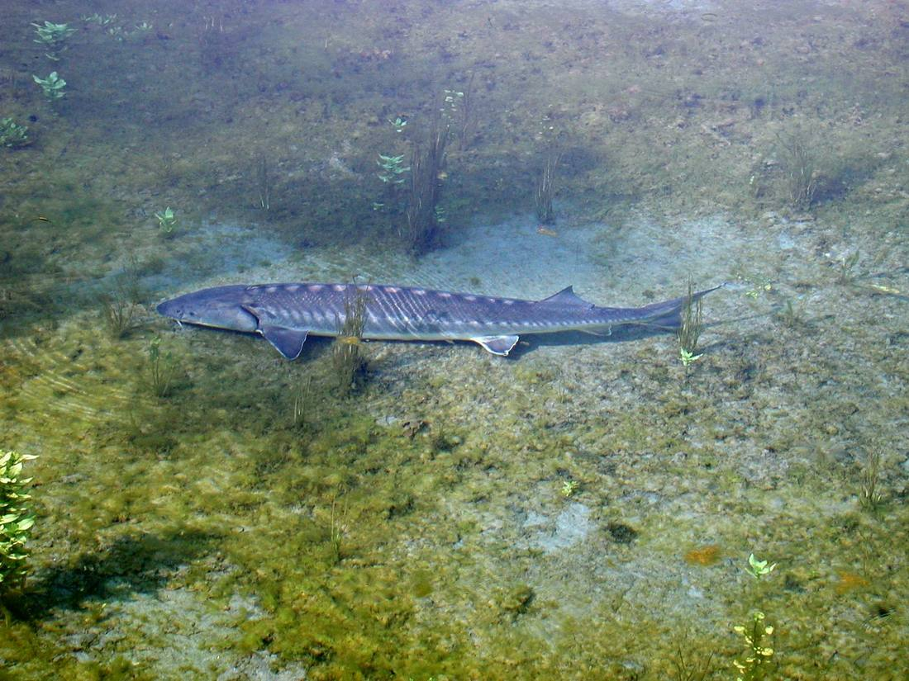
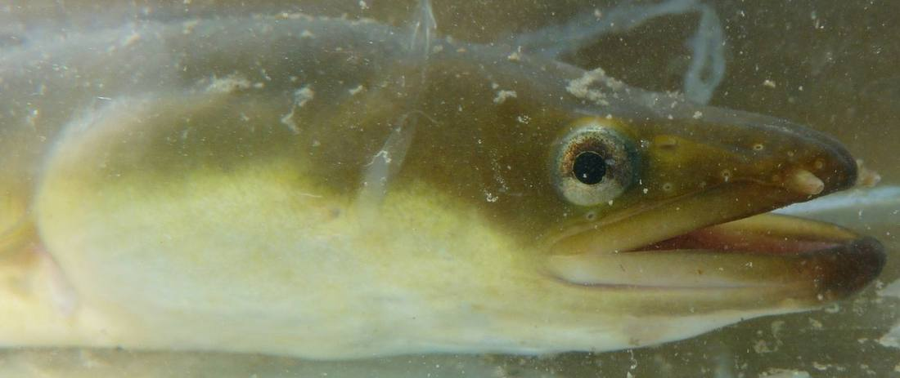

News ·
Il ritorno dei grandi migratori

Progetto Life “Con.Flu.Po”: la costruzione del più grande passaggio per pesci d’Italia.
I pesci sono forse le creature più libere che ci vivono accanto: sotto la superficie di torrenti, fiumi e laghi si spostano invisibili e indisturbati, ignorati dai più, e inseguiti solo dai pazienti pescatori. Ci dimentichiamo spesso di loro, più silenziosi degli uccelli nel cielo e meno fotografati dei mammiferi nei boschi.
I pesci nuotano, i pesci vanno ovunque. O quasi.
Perché alcune delle specie che pescava il nonno oggi sono sparite? La risposta sta paradossalmente in una domanda: che cosa fa un pesce quando si trova davanti a una diga?
Si ferma. Soprattutto se trova l’ostacolo in risalita deve inesorabilmente arrendersi. Spostarsi è molto importante per i pesci: siano essi grandi migratori (lo storione, l’anguilla, la cheppia e il salmone), specie che si spostano per pochi chilometri o specie quasi del tutto sedentarie. Conosciamo bene l’immane sforzo dei salmoni in riproduzione, nella loro risalita dal mare ai fiumi ove sono nati; ricordiamo anche l’incredibile viaggio delle larve di anguilla, dal Golfo del Messico fino ai nostri laghi, sospinte dalla corrente del Golfo stesso: questi miracoli della natura divengono impossibili quando poniamo dighe o altri sbarramenti sul loro percorso. Succede così che i pesci, nella migliore delle ipotesi, si accontentano loro malgrado di habitat inadatti, finendo per sparire dai laghi prealpini e fermandosi molto più a valle di quanto l’istinto suggerisca loro.
La soluzione alla problematica esiste: simili ai sottopassi per evitare agli animali selvatici l’attraversamento delle strade, i passaggi artificiali per pesci sono vere e proprie “scale d’acqua” realizzate perché i pesci possano attraversare gli sbarramenti costruiti dall’uomo, per poi compiere naturalmente il proprio ciclo vitale.
Il più grande passaggio per pesci in Italia è attualmente in costruzione presso l’unico sbarramento del tratto planiziale del Fiume Po: la diga ad uso idroelettrico di Isola Serafini (Monticelli d’Ongina, PC), in concessione a Enel Green Power S.p.a..
Ripristinare la percorribilità del Fiume Po è la parola d’ordine del Progetto Life-Natura (Life11nat/it/188 “Con.Flu.Po”), che interviene sul bacino con maggiore biodiversità ittica del nostro Paese. Il progetto è finanziato dalla Comunità Europea e vede Regione Lombardia–DG Agricoltura capofila di una prestigiosa partnership composta da Regione Emilia Romagna, Agenzia Interregionale per il fiume Po, Autorità di bacino del fiume Po, Parco Lombardo della Valle del Ticino, Provincia di Piacenza e di Rovigo e GRAIA.
E’ stato necessario progettare due imbocchi del passaggio per pesci (uno per ciascuno dei due rami del Po) che si raccordassero in seguito in un un
ico canale. I numeri sono da capogiro: 635 metri di estensione totale; una portata di 4 m3/sec che scorrerà in due canali larghi 2,8 m ciascuno e scavati fino a 10,8 m sotto al piano di campagna. Il passaggio è dotato di una cabina di monitoraggio con vetrata prospiciente il canale (per monitorare il transito dei pesci); una gabbia di cattura è stata approntata per garantire lo studio dei pesci in transito o prelevare le specie più dannose. Il progetto prevede anche l’allevamento e il rilascio di esemplari giovanili dell’ormai rarissimo storione cobice (Acipenser naccarii) e di altre specie native minacciate.
La realizzazione della mastodontica struttura conferma l’impegno profuso dalla Regione nell’ambizioso quadro di deframmentazione dei corsi d’acqua lombardi. Con l’inaugurazione del passaggio per pesci di Isola Serafini, il corridoio ecologico dal Lago di Lugano al Mar Adriatico sarà reso completamente percorribile ai pesci: negli anni precedenti erano stati infatti costruiti due passaggi per pesci sul Fiume Ticino e due sul Fiume Tresa (parzialmente finanziati dal Cantone Ticino) che attendono che quest’ultimo intervento ripristini definitivamente una rotta migratoria preclusa ai pesci da metà degli anni ’50. Anche gli sbarramenti dell’Adda e dell’Oglio sono e saranno interessati da questo imponente disegno di deframmentazione, e nei prossimi anni noi e i nostri figli potremo auspicabilmente ammirare il ritorno di storioni, anguille, cefali e cheppie in aree dalle quali mancano da molti anni.
Sito internet del Progetto Life ConFluPo
Sito internet di Regione Lombardia







